Created Tuesday 21 June 2022
Zagadnienia
❖ Jakie są zadania warstwy łącza danych a jakie warstwy fizycznej?
Warstwa łącza danych:
- umożlwiia komunikację między dwoma bezpośrednio połączonymi urządzeniami
- zapewnia zawodną usługę wysyłania ramek
- kanał komuniukacyjny może być dzielony między wieloma urządzeniami, np. kilka kart WIFI nadaje jednocześnie i zakłóca się wzajemnie
- musi radzic sobie z błędami transmisji, np. wykrywać błędy, stosuje kody korekcyjne
- posługuje się adresami MAC
Warstwa fizyczna
- Określa szczegóły przesyłania pojedynczych bitów
- kodowanie za pomocą sygnałów elektrycnzych, fal radiowych, itp.
❖ Rozwiń pojęcia LAN i WAN.
LAN — Local Area Network — sieci przewodowe Ethernet, sieci bezprzewodowe Wi-Fi
WAN — Wide Area Network — sieci rozległe Frame Relay, MPLS, PPP
Powyższe standardy (np. Ethernet) opisują obie warstwy — łącza danych i fizyczną. Są implementowane na kartach sieciowych (firmware).
❖ Czym różni się koncentrator od przełącznika sieciowego?
Koncentrator (hub) — urządzenie, które rozdziela sygnały. Replikuje otrzymany sygnał na wszystkie pozostałe porty. Nie rozwiązuje problemu kolizji.
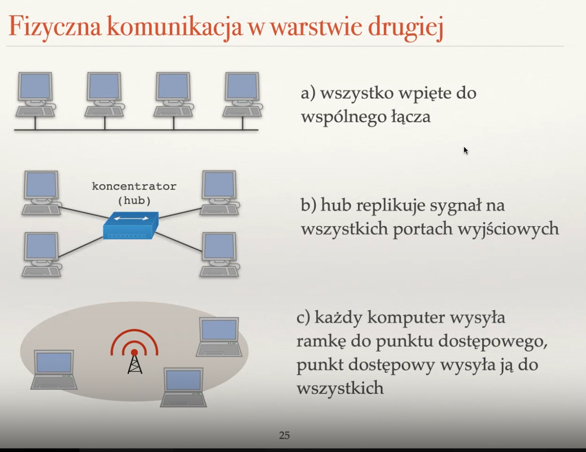
❖ Jak działa algorytm rundowy i bezrundowy ALOHA?
Oba to algorytmy pozwalające na radzenie sobie z problemem kolizji przy jednoczesnym nadawaniu przez kilka urządzeń. Są algorytmami opartymi na losowości.
Rundowy ALOHA
- czas dzielony na rundy — każda starcza na nadanie jednej ramki
- sukces (ramka słyszana) — dokładnie 1 komputer nadaje
- jeśli komputer ma ramkę danych do wysłania to wysyła ją z prawdopodobieństwem p
- dla p = 1/n, gdzie n to liczba komputerów, które chcą wysyłać, sukces średnio co e=2.71 tur (dla dużych n zbiega do e)
Problemy:
- niskie wykorystanie łącza (1/e)
- musimy znać n, by wybrać optymalne p
- potrzebny globalny zegar
Bezrundowy ALOHA
- nie potrzebuje globalnego zegara — każde urządzenie ma własne rundy
- dla p=1/n wykorzystanie łącza jest dwukrotnie niższe (ok. 1/2e), bo rundy mogą się na siebie nakładać
- faktycznie wykorzystywany w latach 60-70 na Hawajach
Oba mają spory problem — musimy znać n, by wyznaczać p.
❖ Jak działa algorytm odczekiwania wykładniczego?
Jest to algorytm losowego unikania kolizji, gdzie dynamicznie dobieramy prawdopodobieństwo wysyłania. Na początku wszystkie maszyny nadają z prawdopodobieństwem 1. Sprawdzają, czy kanał jest wolny. Jeśli któraś maszyna napotka kolizję, przestaje nadawać. Każda maszyna, która napotkała kolizję zmniejsza swoje prawdopodobieństwo nadawania o połowę — p <- p/2. Z czasem zbiegają do optymalnej wartości w okolicach 1/n.
❖ Wyjaśnij skróty CSMA/CD i CSMA/CA; opisz te algorytmy
CSMA/CD (Carrier Sense Multiple Access with Collision Detection / Collision Avoidance) — algorytm wysyłania losowy, oparty na algorytmie oczekiwania wykładniczego.
m zwiększa rozmiar zbioru, z którego losujemy k — wydłuża czas oczekiwania dwukrotnie.
- Zaczynamy z m=1
- Czekamy, aż kanał będzie pusty i zaczynamy wtedy nadawać.
- Podczas nadawania nasłuchujemy kolizji. Jeśli napotkamy kolizję:
- kończymy nadawać
- losujemy k ze zbioru {0, ..., 2^m - 1} i odczekujemy k rund
- m <- m + 1
- wracamy do kroku 2
Jak sprawdzać, czy ramka dotarła? Jeśli dobierzemy dość długi rozmiar ramki, to zagwarantujemy, że czas wysłania ramki >= 2 * czas propagacji, czyli ramka dotrze do odbiorcy albo dowiemy się o kolizji, gdy jeszcze ją nadajemy. W Ethernecie kabel ma co najwyżej 100m a ramka 64 ma bajty przy prędkości 100Mbit.
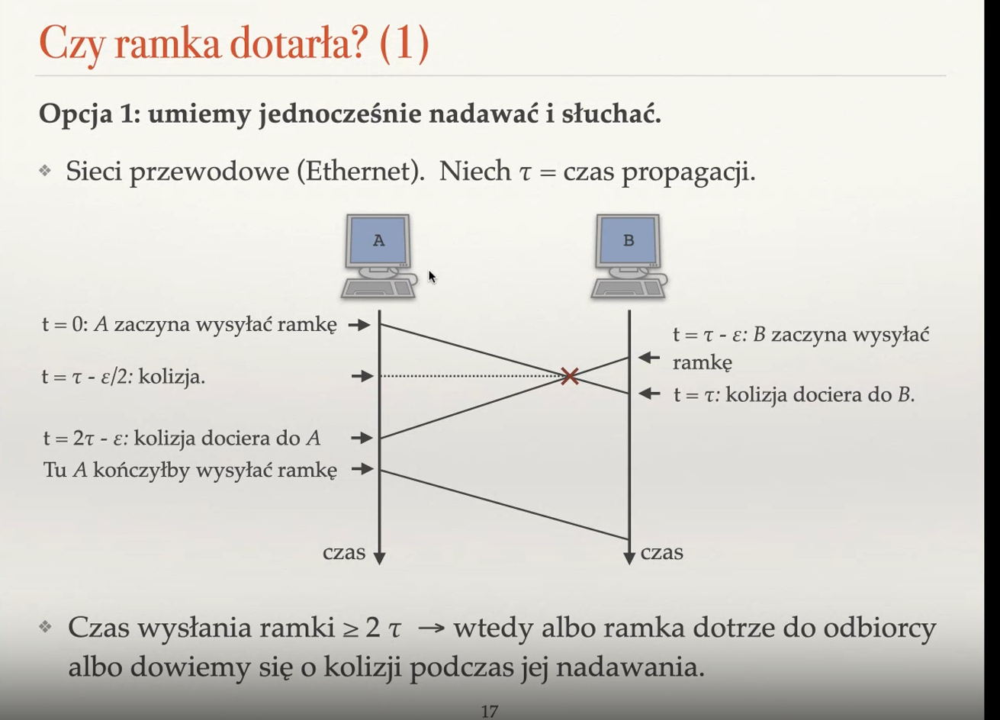
Chcemy też, żeby długość rundy w CSMA/CD była odpowiednio długa, ponieważ chcemy, by oczekujący komputer czekał dość długo, by dotarł do niego powtórzony pakiet, czyli obsłużymy kolizję.
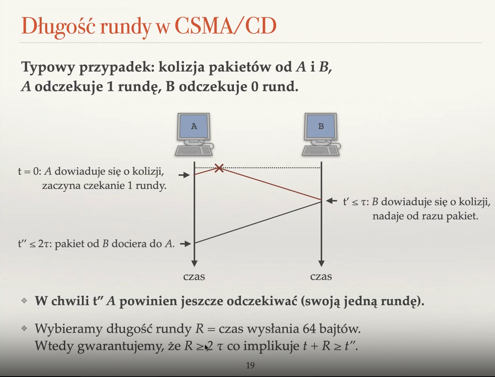
W WiFi kolizje są droższe, bo nie umiemy jednocześnie nadawać i słuchać (wysyłamy większe ramki i zawsze wysyłamy je w całości, więc w przypadku kolizji wysyłamy dużo bezsensownych danych). Z tego powodu nie używamy Collision Detection, ale Collision Avoidance — CSMA/CA. Nadający nie wie, czy wystąpiłá kolizja, więc konieczne jest potwierdzanie otrzymania każdej ramki. Zawsze odczekujemy pewien czas przed nadawaniem, nawet jeśli kanał jest wolny.
❖ Opisz budowę ramki Ethernetowej.
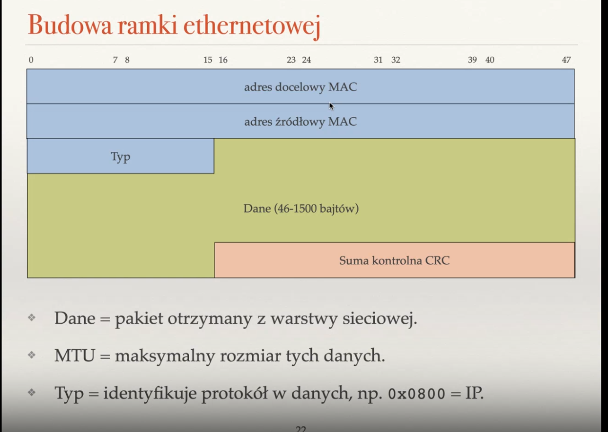
Długość ramki:
- MTU <= 1500 bajtów — historyczne (droga pamięć RAM), mniejsze ramki są mniej podatne na uszkodzenia
- musi mieć co najmniej 64 bajty -> dane >= 46 bajtów (reszta na nagłówek) — jeśli jest za mało danych, to dodajemy wypełnienie (wysyłanie musi trwać co najmniej 2 * czas propagacji)
❖ Co to jest adres MAC?
Unikatowy aders sprzętowym, przypisany karcie sieciowej przez producenta (teoretycznie na stałe, ale można go zmienić w prosty sposób). Ma 6 bajtów, np. 00:14:2a:1f:f3:ba. Pierwsze trzy bajty to adres producenta (przyznawany przez IEEE), a trzy kolejne nadaje sam producent.
Adresy MAC i IP globalnie identyfikują kartę sieciową. Nie używamy adresów MAC w warstwie sieciowej, bo nie mają hierarchii, przez co tablice routingu byłyby za duże. Dobrą analogią jest MAC = PESEL, a IP = adres zamieszkania.
❖ Do czego służy tryb nasłuchu (promiscuous mode)?
Domyślnie karta sieciowa odrzuca ramki, jeśli adres docelowy ramki nie jest równy adresowi MAC naszej karty sieciowej. Jeśli ustawimy kartę sieciową w tryb nasłuchu (promiscuous), wtedy wszystkie ramki są przesyłane do systemu operacyjnego (robi tak np. Wireshark).
Jeśli adres odbiorcy to same jedynki — FF:FF:FF:FF:FF:FF, wtedy każdy odbiera taką ramkę (rozgłaszanie).
❖ Dlaczego w Ethernecie definiuje się minimalną długość ramki?
Ze względu na kolizję. Minimalna długość ramki — 64 bajty — gwarantuje, że kolizja zostanie odebrana przez nadawcę zanim skończy on wysyłać tę ramkę.
❖ Jak dobierać długość rundy odczekiwania w protokole CSMA/CD?
Długość rundy dobieramy tak, by był on co najmniej dwa razy dłuższy od czasu propagacji sygnału. Gwarantuje nam to, że w przypadku kolizji gdy jeden z komputerów oczekuje, a drugi ponawia wysyłanie, wtedy ramka przyjdzie do oczekującego, zanim skończy się jego czas oczekiwania.
❖ Do czego służą protokoły ARP, RARP, DHCP i APIPA?
Służą do przypisania adresów MAC danym adresom IP. Jeśli router chce przesłać dalej pakiet IP, wtedy sprawdza pod jaki docelowy adres IP chce go wysłać i sprawdza, jakie jest IP następnego routera na trasie. Wysyła wtedy komunikaty ARP do swoich sąsiadów, by dowiedzieć się, który z nich ma adres IP, na co oni odpowiadają mu "Tak, to ja mam taki adres IP i mój adres MAC to X:X:X:X:X:X". W ten sposób router dowiaduje się, jaki adres MAC należy wpisać jako adres docelowy w ramce, żeby pakiet IP dotarł do następnego routera na trasie lub do komputera docelowego.
Istnieje też odwrotne przekształcanie, tzn. adresy MAC są przekształcane na IP. Służy to między innymi do automatycznego przypisywania adresów IP lub jest używane w komputerach bezdyskowych (znają tylko MAC swojej karty sieciowej). Służy do tego protokół RARP (Reverse ARP). Jego bogatszą wersją jest DHCP, który pobiera całą konfigurację sieci (IP, maska podsieci, brama domyślna, itd.).
Jeśli na DHCP nikt nie odpowie (i wszystkie inny sposoby przypisania IP zawiodą), wtedy używamy APIPA (Automatic Private IP Addressing). Komputer losuje sobie wtedy adres z sieci 169.254.0.0/16. Działa w IPv4, w IPv6 mamy adresy link-local, czyli komputer przydziela sobie adres z sieci fe80::/64, a ostatnie 64 bity adresu są deterministyczną funkcją adresu MAC.
❖ Czym różni się łączenie dwóch sieci za pomocą mostu od łączenia ich za pomocą routera?
Most — przełącznik z dwoma portami. Łączy dwie sieci, często różnych technologii (np. Ethernet i WLAN).
Router rozpakowuje ramkę i na podstawie zawartości pakietu przesyła wiadomość dalej, opakowując ją w nową ramkę, dopasowaną do innej technologii, np. WIFI.
Most nie rozumie pakietów, więc nie wyciąga ich z ramek, a jedynie zmienia nagłówek ramki i przelicza sumę kontrolną. Dzięki temu jest szybszy niż router, ale ma wadę — nie rozumie IP, więc fragmentacja IP jest niemożliwa. W przypadku dużych pakietów (większe niż MTU) nie uda się przesłać.
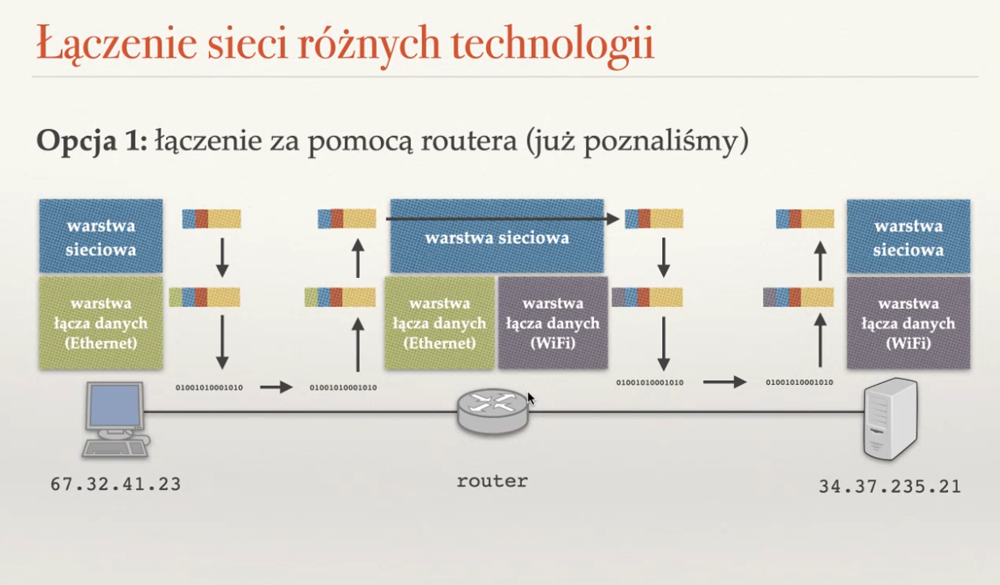
❖ Jak warstwa łącza danych realizuje rozgłaszanie?
Domena rozgłoszeniowa — karty sieciowe osiągalne bez pośrednictwa routera.
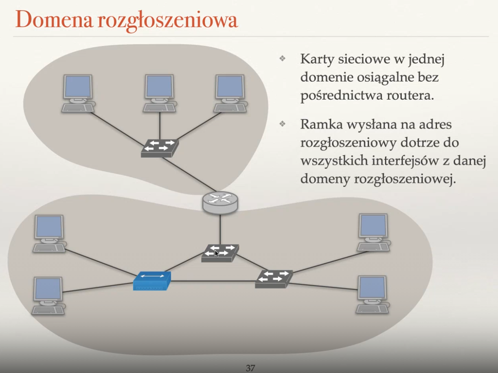
Domena kolizyjna — jeśli karty są w jednej domenie i wysyłają jednocześnie, to następuje kolizja. Switche separują domeny kolizyjne, a koncentratory nie. Efektywność pracy sieci zależy od rozmiaru domeny kolizyjnej. Najlepiej jeśli są dwupunktowe (przy pełnym dupleksie nie ma wtedy w ogóle kolizji).
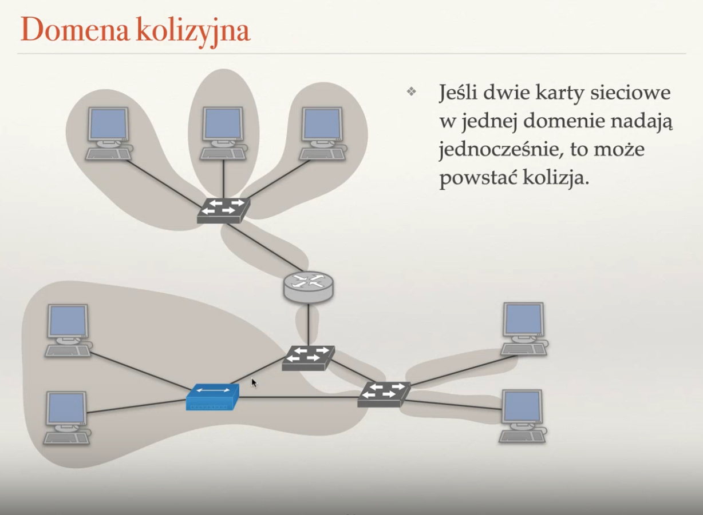
❖ Na czym polega tryb uczenia się w przełączniku sieciowym?
Switch uczy się, jakie adresy MAC są podłączone do danych portów. Jeśli ktoś wyśle przez niego komunikat, to z początku switch rozsyła ten komunikat do wszystkich portów, ale zapamięta wtedy, do którego udało mu się dotrzeć i przy następnych próbach będzie wysyłał tylko do niego. Jeśli podmienimy komputery, to zmodyfikuje swoje mapowanie adresów MAC.
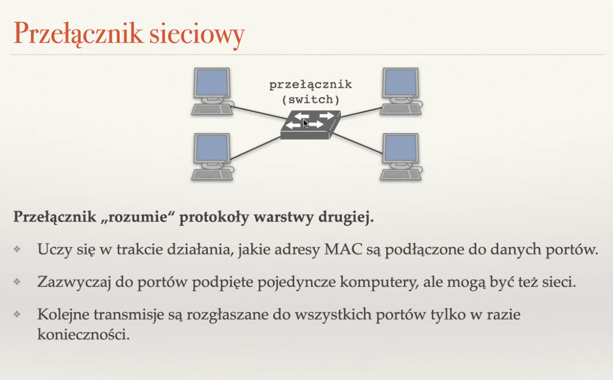
❖ Po co w przełączanym Ethernecie stosuje się algorytm drzewa spinającego?
Switche nie zapamiętują topologii sieci, bo są zbyt prostymi urządzeniami. W przypadku cyklów w sieci może dojść do burzy rozgłoszeniowej (ramki wysyłane na adres rozgłoszeniowy są przekazywane do wszystkich portów, a zatem w cyklu zaczynają krążyć w kółko i się nawarstwiać), które mogą spalić switch. Stosuje się w nich STP (Spanning Tree Protocol), czyli rozproszony algorytm budowy drzewa spinającego. Mówi on, że pewne krawędzie w sieci nie są używane — są odcinane. Zaczynamy z nich korzystać tylko wtedy, gdy pozostałe nie będą dostępne, np. w wyniku awarii.
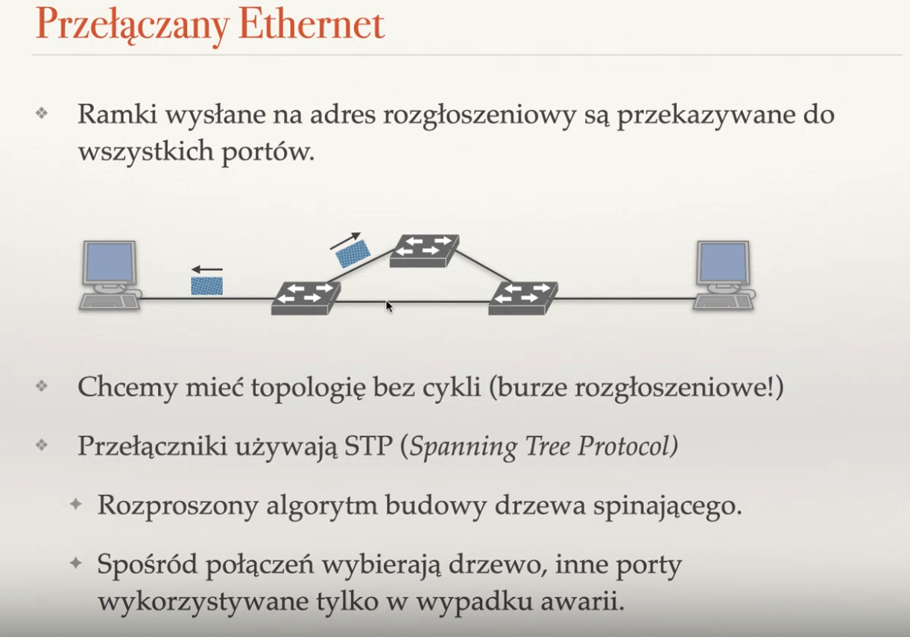
❖ Co to jest sieć VLAN? Po co się ją stosuje?
VLAN — wirtualne sieci lokalne. Czasami fizyczna budowa sieci nie odpowiada jej budowie logicznej, np. chcemy mieć w biurze podział sieci pomiędzy działem księgowości, a działem developerskim, ale budowa fizyczna na to nie pozwala. Za pomocą przełączników możemy przydzielać który port należy do jakiej sieci wirtualnej. Wtedy w ramkach pojawia się dodatkowe pole — numer VLANu — i jest ona przesyłana tylko w jego obrębie.
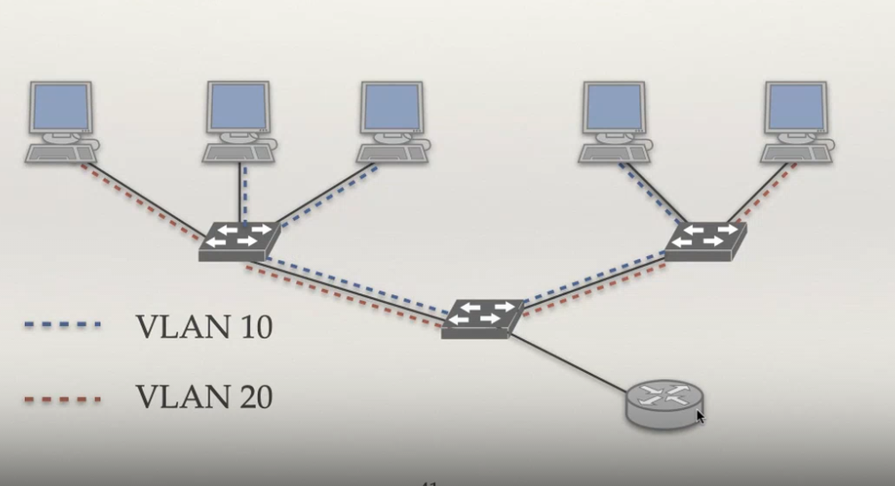
❖ Wyjaśnij zjawisko ukrytej stacji.
Zjawisko to występuje tylko w sieciach bezprzewodowych (nie ma szans wystąpić po kablu). Sieci bezprzewodowe mają pewien zasięg. Jeżeli dwa komputery nie leżą w swoim zasięgu (nie widzą się — są przed sobą ukryte) i jednocześnie nadają do AP (Access Point), to zajdzie kolizja. Oznacza to, że strategia nadawaj, jeśli nikt nie nadaje nie zawsze działa.
Można sobie poradzić z tym problemem dodając pewną technikę do CSMA/CA. Zanim A nadaje ramkę do AP, to wysyła komunikat RTS (Request To Send). AP odsyła CTS (Clear To Send), które słyszy zarówno A oraz B (wysyła do każdego w zasięgu). B będzie wtedy milczał przez czas, jaki potrzebuje A na nadanie ramki. A wysyła ramkę, a AP ją potwierdza.
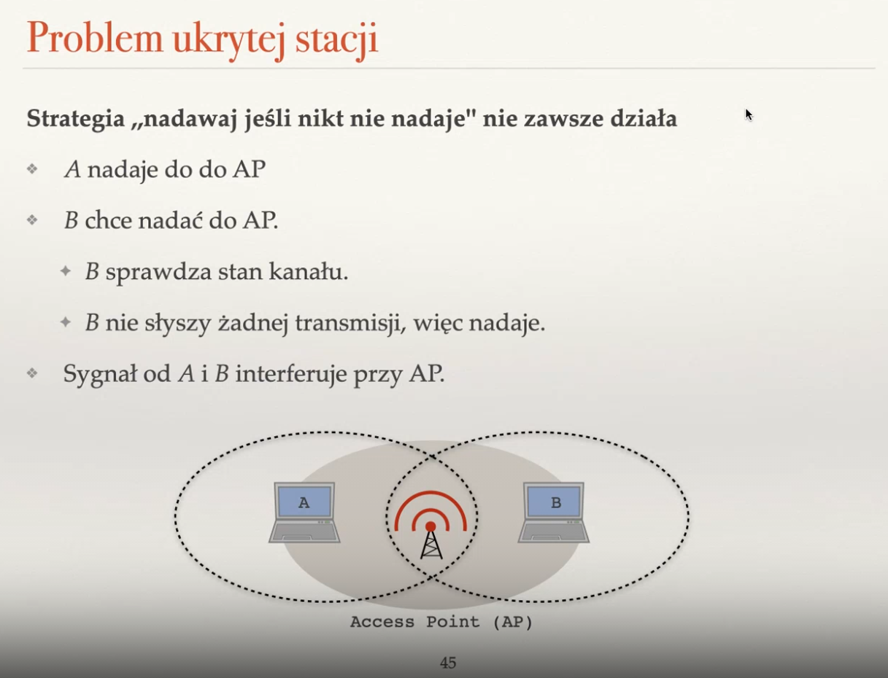
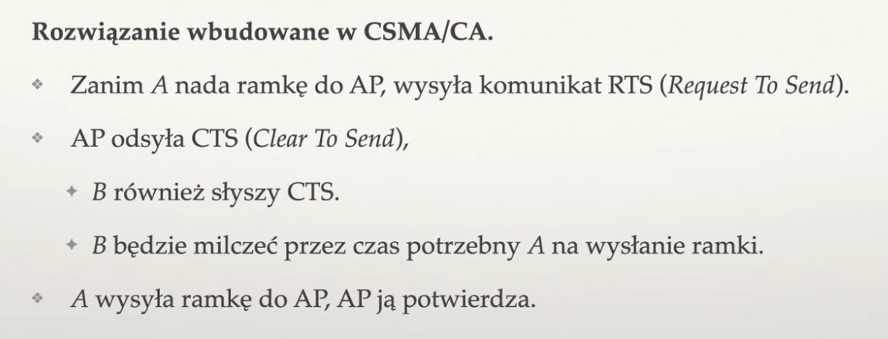
❖ Na czym polega rezerwowanie łącza za pomocą RTS i CTS?
RTS (Request To Send) i CTS (Clear To Send) to sygnały pomagające uniknąć problemu ukrytej stacji. Nadawca A wysyła RTS do Acces Pointa, na co ten odpowiada wszystkim CTS i pozwala A nadawać. Wszyscy inni nadawcy wiedzą, że teraz nadaje A, więc milczą. Gdy A wyśle ramkę, wtedy AP potwierdza odbiór.
❖ Jakie znasz problemy z warstwą fizyczną w sieciach przewodowych i bezprzewodowych?
Problemy z warstwą fizyczną
- malejąca siła sygnału (zasięg sieci bezprzewodowych to ok. 50m (2.4GHz) i ok. 20m (5GHz), słabnie z kwadratem odległości, zanika przy przechodzeniu przez ściany, itd. W sieciach przewodowych słabnący sygnał wynika z tłumienia w kablu.
- interferencje z kartami sieciowymi, telefonami bezprzewodowymi, mikrofalówkami, Bluetooth, itd.
- propagacja wielościeżkowa — ten sam sygnał wędruje do celu wieloma ścieżkami różnej długości i interferuje ze sobą.
Wszystkie te problemy pojawiają się głównie przy sieciach bezprzewodowych.
❖ Jakie znasz standardy szyfrowania w sieciach bezprzewodowych?
Przestarzałe mało ważne: WEP (Wired Equvalent Privacy) i WPA (Wi-Fi Protected Access). Nie należy ich używać.
Współcześnie korzysta się z WPA2 = 802.11i. Ma dwa standardy:
- personal, PSK (Pre-Shared Key) — jeden klucz szyfrujący ustalany na początku sesji. Jeśli ktoś go podsłucha na początku komunikacji, to może podsłuchiwać.
- enterprise — osobny serwer uwierzytelniający (np. eduroam tak działa)
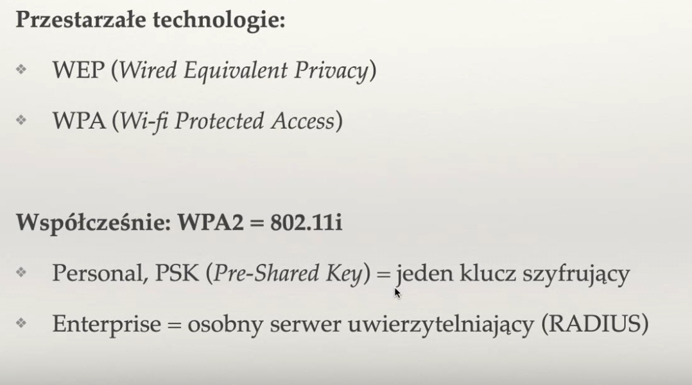
❖ Wymień popularne standardy Ethernetu i sieci WLAN.
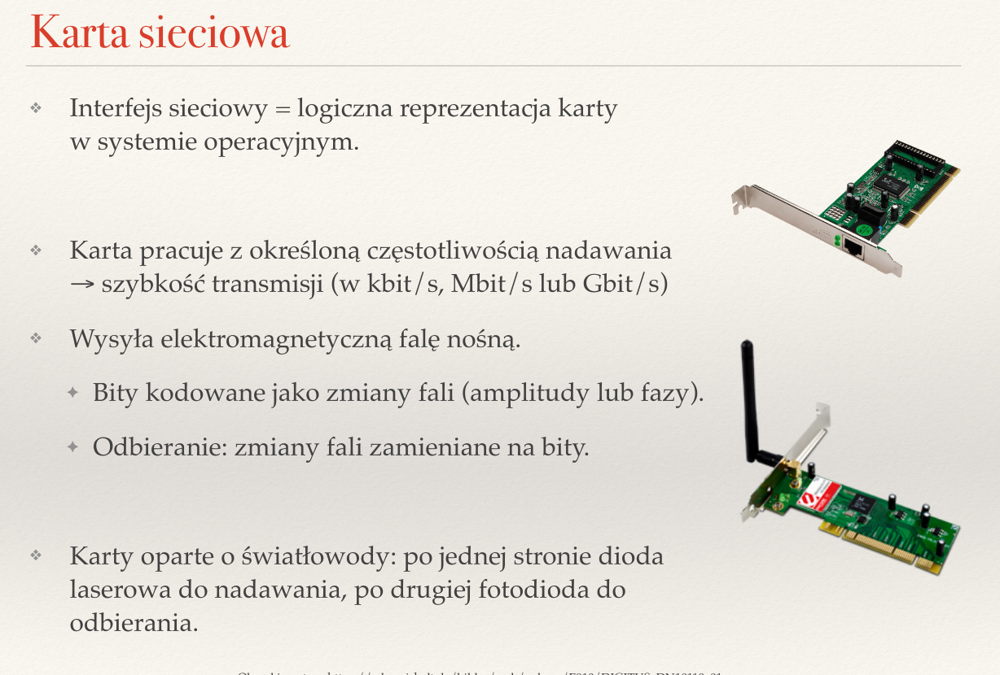
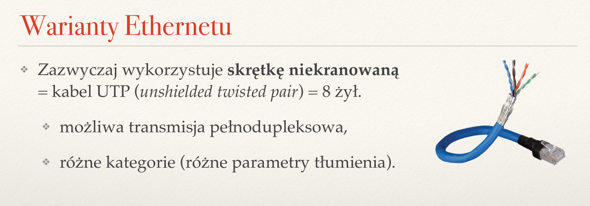
Najczęstsze warianty Ethernetu
- Ethernet (10 Mbit/s, kabel kocentryczny lub skrętka kat. >=3)
- Fast Ethernet (100 Mbit/s, skrętka kat. >=5)
- Gigabit Ethernet (1 Gbit/s, skrętka kat. >= 5e lub światłowód)
- 10 Gigabit Ethernet (10 Gbit/s skrętka kat. >= 6a lub światłowód)
Najczęstsze warianty WLAN
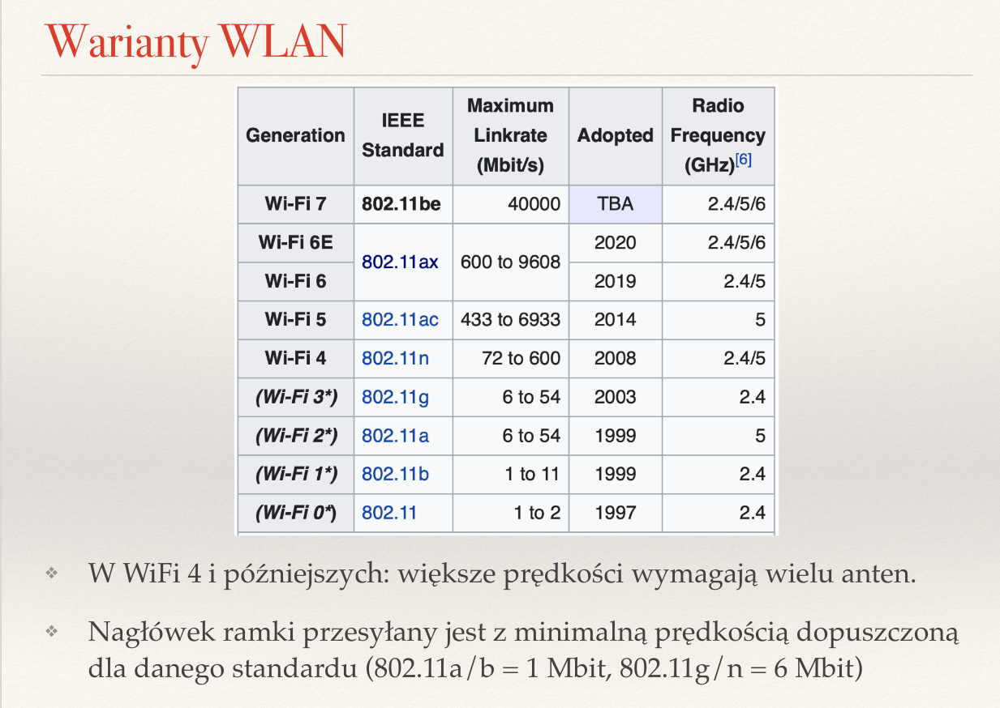
{kind=link}
{kind=link}
{kind=link}
{kind=link}
{kind=link}
{kind=link}
{kind=link}
{kind=link}
{kind=link}
{kind=link}
{kind=link}
{kind=link}
{kind=link}
{kind=link}
{kind=link}
{kind=link}
{kind=link}
{kind=link}
{kind=link}
{kind=link}